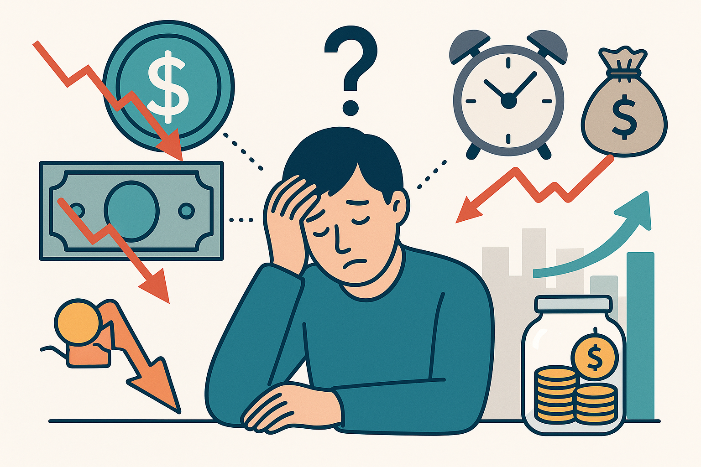

تقلبات سعر الصرف وتأثيرها على معدل الادخار

أثر التغيرات المتكررة في قيمة العملة على السلوك الادخاري
مفهوم تقلبات سعر الصرف
تقلبات سعر الصرف تشير إلى التغيرات المستمرة في قيمة العملة المحلية
مقابل العملات الأجنبية خلال فترات زمنية قصيرة أو متوسطة. هذه التقلبات
قد تكون ناتجة عن عوامل اقتصادية مثل التضخم، الفائدة، أو السياسات
النقدية، وقد تتأثر أيضًا بالأحداث الجيوسياسية والعرض والطلب في الأسواق
الدولية.
تأثير التقلبات على القرارات الادخارية
عندما تكون العملة المحلية غير مستقرة، يشعر الأفراد بعدم الأمان المالي،
ما يدفعهم إلى تغيير سلوكهم الادخاري. في كثير من الحالات، يؤدي تراجع
العملة إلى فقدان الثقة في الادخار بالعملة المحلية، فيتجه البعض إلى
تحويل مدخراتهم إلى عملات أجنبية أو شراء أصول مادية مثل الذهب والعقار
لحماية القيمة.
التقلبات المتكررة قد تجعل الأفراد يترددون في الادخار طويل الأجل،
ويميلون إلى الإنفاق الفوري خوفًا من انخفاض قيمة أموالهم مستقبلًا، مما
يقلل من مستويات الادخار على المدى البعيد.
أهمية استقرار سعر الصرف لدعم الادخار
الاستقرار النسبي في سعر الصرف يعزز ثقة المواطنين في النظام المالي،
ويشجعهم على الادخار والاستثمار داخل الاقتصاد المحلي. كما يساعد على
التنبؤ بالتكاليف المستقبلية وتخطيط المصروفات والالتزامات المالية بشكل
أكثر دقة.
بالتالي، فإن الحفاظ على استقرار سعر الصرف يُعتبر من أدوات السياسة
النقدية الأساسية التي تسهم في تحسين معدلات الادخار وتعزيز الاستقرار
الاقتصادي العام.